출발점과 도착점
- BPE 토큰화·토큰 ID·임베딩 조회는 이미 배운 입력 지식으로 사용한다.
- 원문 텍스트에서 다음 토큰 예측용 입력·정답 묶음을 만드는 과정을 구현한다.
- 토큰 정보와 위치 정보를 결합해 GPT가 받을 입력 텐서를 완성한다.
GENERATIVE AI · INPUT PIPELINE
원문을 다음 토큰 예측용 batch와 위치가 포함된 입력 임베딩으로 바꾼다.
02 · CONCEPT
03 · CONCEPT
x와 정답 ID 텐서 y이다.[batch, tokens, dimensions] 입력 텐서이다.y의 열은 같은 행 x보다 원문에서 정확히 한 토큰 뒤를 가리켜야 한다.04 · IMAGE
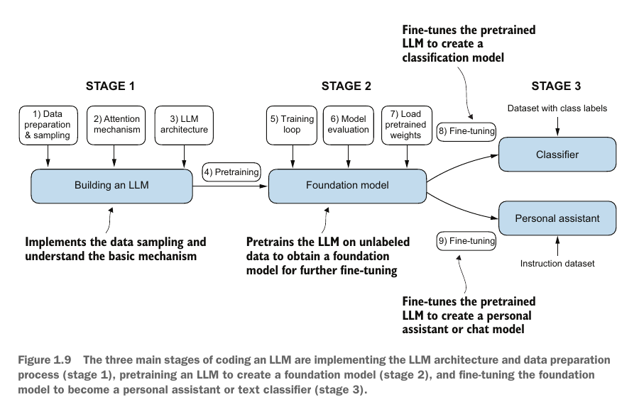
05 · IMAGE
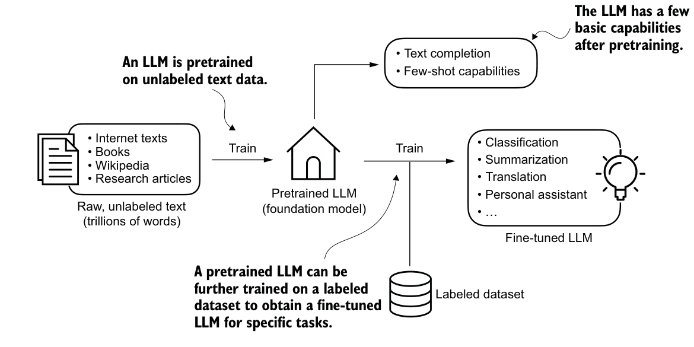
06 · IMAGE
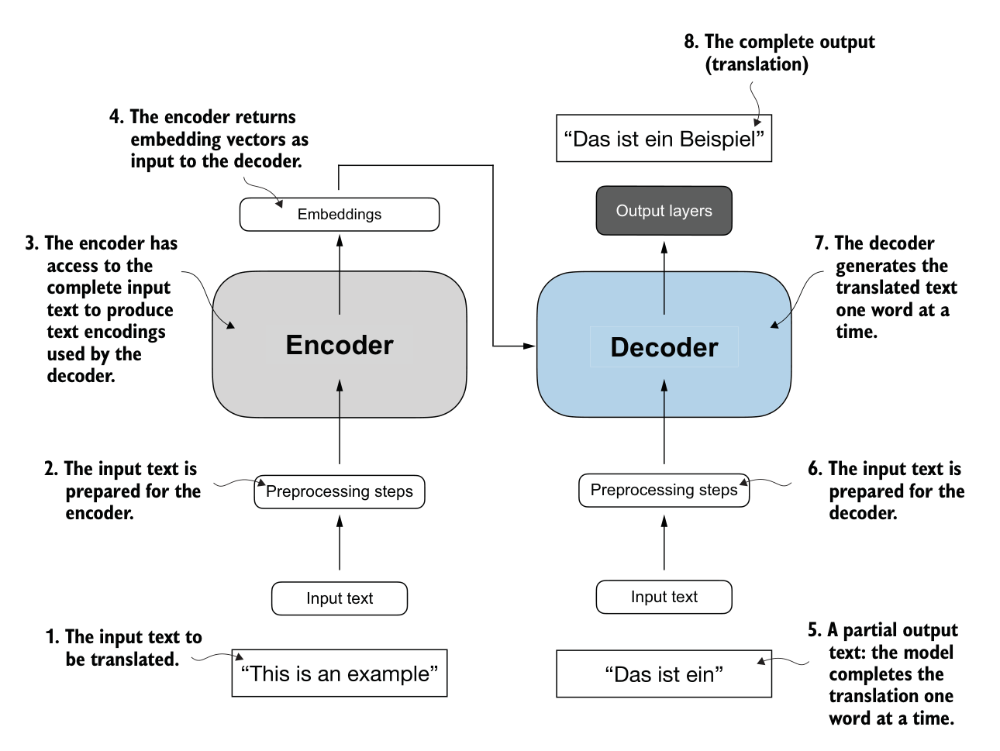
07 · IMAGE
This에서 is를 고르면 다음 입력은 This is가 된다.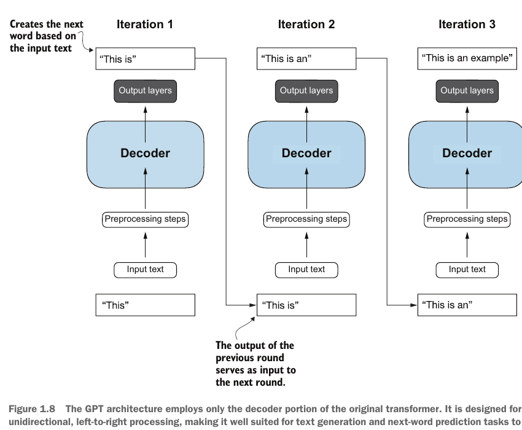
08 · IMAGE
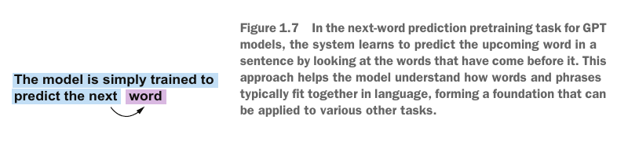
09 · IMAGE
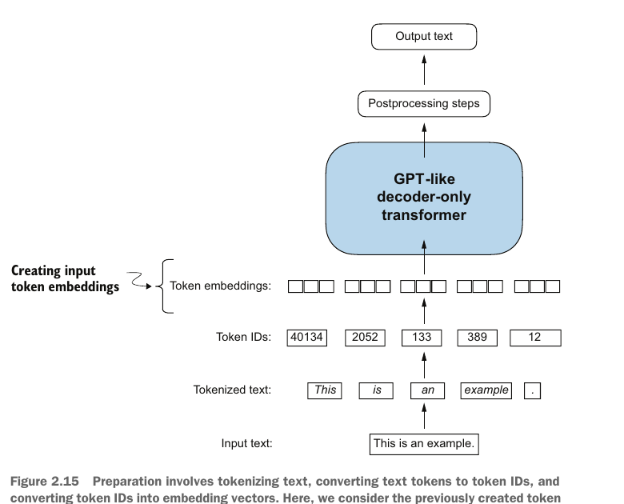
10 · CONCEPT
tiktoken의 GPT-2 인코더를 사용한다.<|endoftext|>의 ID는 50,256이다.<|unk|>가 필요하지 않다.11 · CODE
tiktoken의 encode와 decodeencode는 문자열을 토큰 ID 목록으로 바꾼다.decode는 ID 목록을 문자열로 복원한다.import tiktoken
tokenizer = tiktoken.get_encoding("gpt2")
text = "Hello <|endoftext|> someunknownPlace"
ids = tokenizer.encode(text, allowed_special={"<|endoftext|>"})
assert tokenizer.decode(ids) == textids = [15496, 220, 50256, 617, 34680, 27271]
조각 = ['Hello', ' ', '<|endoftext|>', ' some', 'unknown', 'Place']
복원 = Hello <|endoftext|> someunknownPlace12 · CONCEPT
decode(encode(text)) == text가 성립하면 원문 복원이 확인된다.len(ids)는 문자 수나 단어 수와 같다고 가정하지 않는다.0 <= id < 50257 범위에 있어야 한다.someunknownPlace가 여러 ID로 나뉘어도 전체 ID 목록을 decode하면 원문이 돌아와야 한다.13 · CONCEPT
DataLoader가 여러 sample을 [B,T]로 쌓아 같은 행렬 연산을 적용하려면 한 batch 안의 token 길이 T가 같아야 한다.max_length=T인 고정 창을 사용해 매 batch의 직사각형 Shape을 보장한다.[B,T,D]가 되어 batch·token 위치를 병렬로 계산할 수 있다.max_length까지 padding하고, padding 위치는 mask로 실제 문맥에서 제외한다.max_length보다 긴 sample은 꼬리를 truncate하거나 여러 window로 분할하며, truncate는 제거한 정보를 잃고 window는 각 행 밖의 문맥을 직접 보지 못한다.T의 window를 반복 추출하고, stride로 다음 window의 시작점을 정한다.14 · IMAGE
T의 학습 행은 x=[t_i,...,t_(i+T-1)], y=[t_(i+1),...,t_(i+T)]로 한 칸 어긋난다.j에서 y[j]는 x[j] 바로 다음 원문 토큰이다.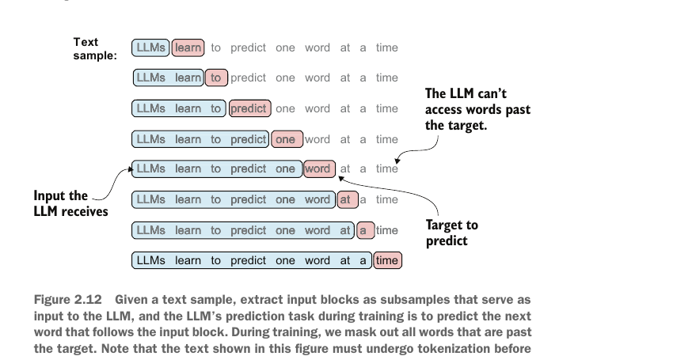
15 · IMAGE
앞에서는 주어진 토큰열로 다음 토큰을 생성하는 추론을 생각했다. 여기서는 긴 원문을 여러 입력·정답 쌍으로 바꿔, 각 위치에서 다음 토큰을 맞히도록 학습하는 과정을 본다.
x=[In, the, heart, of].y=[the, heart, of, the].In→the, the→heart, heart→of, of→the를 모두 학습한다.T는 순서대로 놓인 토큰이다.B개를 쌓는다. 임베딩 후 [B,T,D]이며 D는 토큰 벡터 길이다.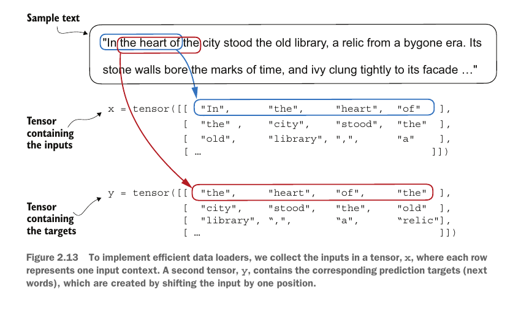
16 · CONCEPT
max_lengthmax_length는 각 입력 행과 정답 행의 token 축 길이를 정한다.stridestride는 다음 입력 창의 시작 위치가 몇 토큰 이동하는지를 정한다.stride가 max_length보다 작으면 이웃한 입력 행이 일부 토큰을 공유한다.17 · IMAGE
i를 옮기며 batch 번호를 바꾸지 않는다.Inputs of batch 1·2는 실제로 input window(sample) 1·2이며, 서로 다른 두 batch가 아니다.DataLoader가 window B개를 batch로 묶는다. batch_size=8이면 한 batch에 input sample 8개가 들어간다.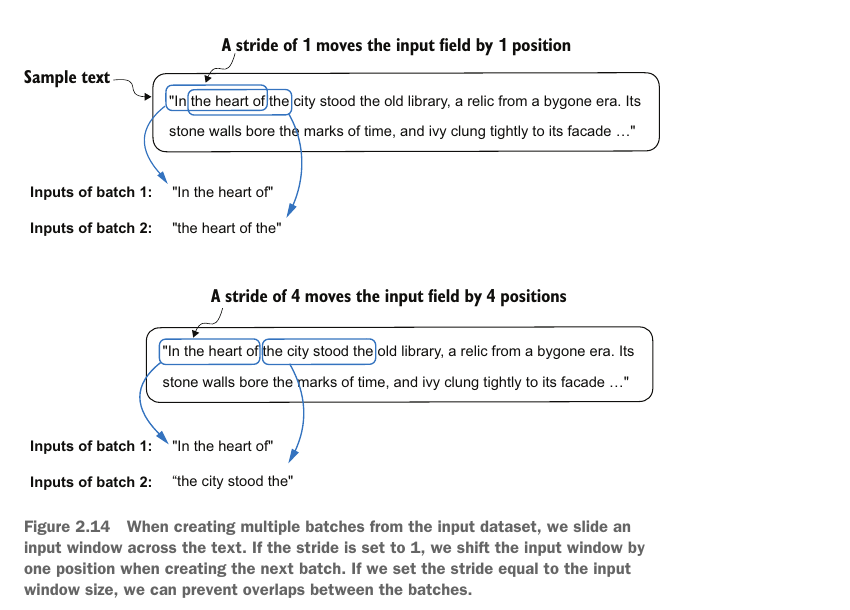
18 · CONCEPT
GPTDatasetV1의 정의와 도입 목적GPTDatasetV1은 원문을 고정 길이 input-target sample로 바꾸는 이 강의용 PyTorch Dataset 클래스이다.V1은 교재의 첫 최소 구현을 뜻하며 GPT 모델 버전이나 PyTorch 내장 dataset 이름이 아니다.tokenizer → GPTDatasetV1 → DataLoader → GPT 입력 임베딩 순서이며, 모델 학습 전에 sample 생성 규칙을 맡는다.max_length, stride, 한 칸 이동 규칙을 반복 가능한 코드 계약으로 묶기 위해 도입한다.torch.long tensor로 저장한다.__getitem__(idx)가 sample 한 쌍을 반환하면 다음 단계의 DataLoader가 여러 sample을 batch로 묶는다.19 · CODE
GPTDatasetV1 구현i부터 i + max_length 직전까지이다.import torch
from torch.utils.data import Dataset
class GPTDatasetV1(Dataset):
def __init__(self, txt, tokenizer, max_length, stride):
self.input_ids = []
self.target_ids = []
token_ids = tokenizer.encode(txt)
for i in range(0, len(token_ids) - max_length, stride):
x = token_ids[i:i + max_length]
y = token_ids[i + 1:i + max_length + 1]
self.input_ids.append(torch.tensor(x))
self.target_ids.append(torch.tensor(y))
def __len__(self):
return len(self.input_ids)
def __getitem__(self, idx):
return self.input_ids[idx], self.target_ids[idx]20 · CODE
DataLoader의 책임batch_size는 한 번에 묶을 입력·정답 행의 수를 정한다.shuffle=True는 epoch마다 행의 학습 순서를 섞는다.drop_last=True는 행 수가 부족한 마지막 batch를 제외해 batch Shape을 일정하게 만든다.from torch.utils.data import DataLoader
dataset = GPTDatasetV1(raw_text, tokenizer, max_length=4, stride=4)
dataloader = DataLoader(
dataset,
batch_size=8,
shuffle=False,
drop_last=True,
num_workers=0,
)21 · CODE
[B, T] 텐서B는 batch의 행 수이고 T는 각 행의 token 수이다.batch_size=8과 max_length=4이면 inputs.shape == targets.shape == [8, 4]이다.targets[b, t]는 같은 행 inputs[b, t] 바로 다음의 원문 토큰이다.inputs, targets = next(iter(dataloader))
print(inputs.shape) # torch.Size([8, 4])
print(targets.shape) # torch.Size([8, 4])22 · CODE
inputs.shape == targets.shape로 두 텐서의 대응 크기를 확인한다.inputs[:, 1:] == targets[:, :-1]로 각 행의 한 칸 이동을 확인한다.torch.long이어야 한다.assert inputs.shape == targets.shape
assert torch.equal(inputs[:, 1:], targets[:, :-1])
assert inputs.dtype == targets.dtype == torch.long23 · CODE
nn.Embedding(V, D)는 사전 크기 V개의 행과 임베딩 차원 D개의 열을 가진다.[B, T]를 조회하면 출력 Shape은 [B, T, D]가 된다.V = 50_257
D = 256
token_embedding = torch.nn.Embedding(V, D)
token_embeddings = token_embedding(inputs)
assert token_embeddings.shape == (8, 4, 256)24 · IMAGE
nn.Embedding(V, D)에서 토큰 ID는 가중치 행의 번호이며 출력은 그 행의 길이 D인 벡터이다.5가 0부터 세어 여섯 번째 행과 연결되는지 확인한다.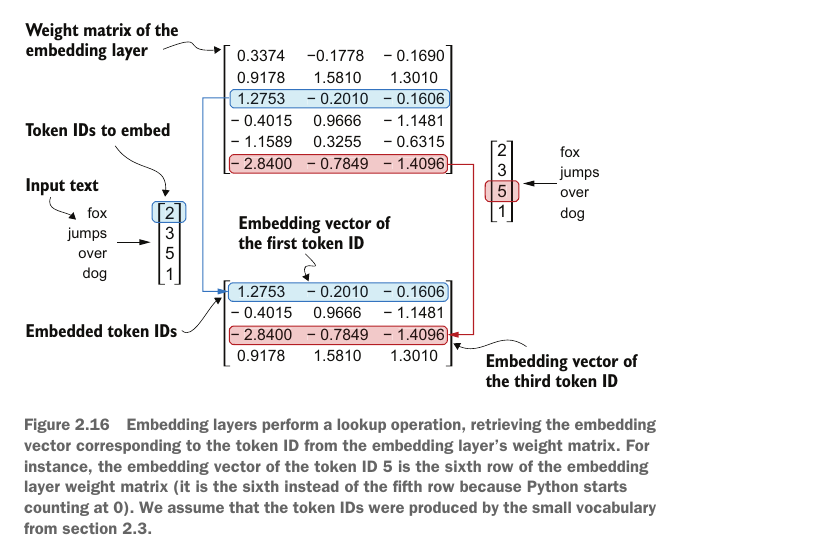
25 · IMAGE
fox와 네 번째 fox는 토큰 정보만으로 구별되지 않는다.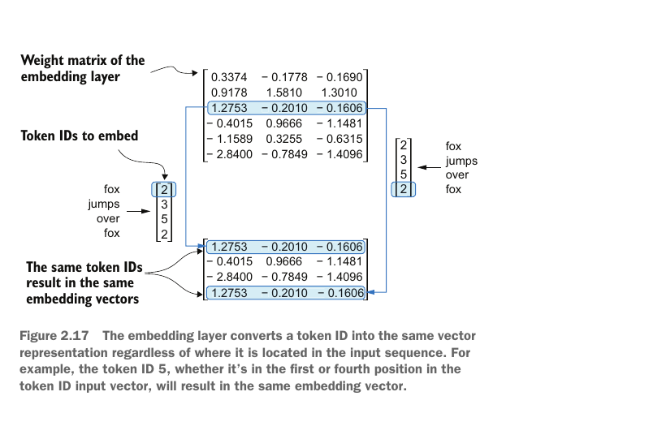
26 · TABLE
| 비교 기준 | 절대 위치 | 상대 위치 |
|---|---|---|
| 질문 | 몇 번째 자리인가? | 서로 얼마나 떨어졌는가? |
| 값의 기준 | 각 입력 위치 | token 쌍의 거리 |
| 이번 구현 | 사용 | 개념만 구분 |
27 · CODE
[T, D] 위치 표D를 가진다.torch.arange(T)는 현재 입력의 위치 번호 0부터 T-1까지를 만든다.T는 모델이 지원하는 최대 문맥 길이를 넘지 않아야 한다.T = inputs.shape[1]
position_embedding = torch.nn.Embedding(4, D)
positions = torch.arange(T)
position_embeddings = position_embedding(positions)
assert position_embeddings.shape == (4, 256)28 · IMAGE
[T, D] 위치 텐서를 batch의 모든 [B, T, D] 토큰 텐서에 반복 적용한다.[B, T, D]는 덧셈 전 토큰 임베딩 Shape과 같다.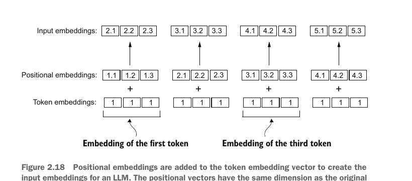
29 · CODE
token_embeddings = token_embedding(inputs) # [B, T, D]
position_embeddings = position_embedding(torch.arange(T)) # [T, D]
input_embeddings = token_embeddings + position_embeddings # [B, T, D]
assert input_embeddings.shape == (8, 4, 256)30 · IMAGE
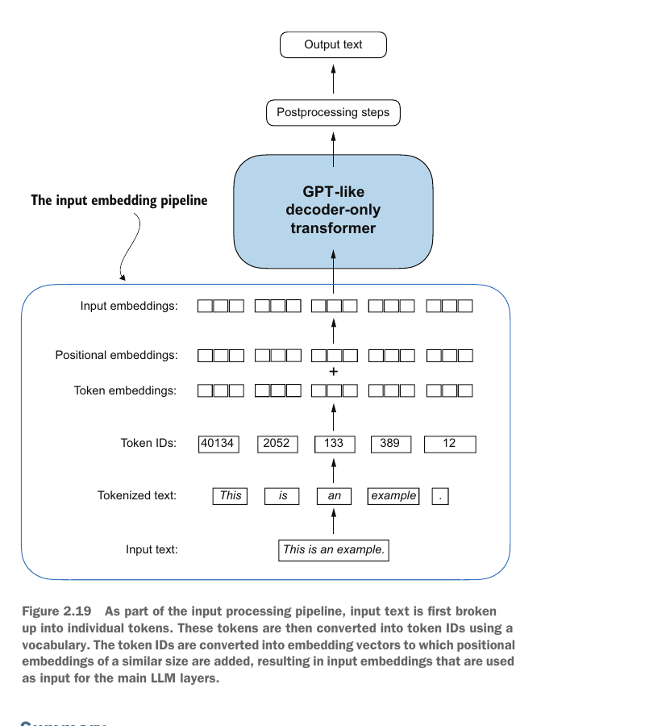
31 · CODE
inputs와 targets는 각각 [B, T] 정수 ID 텐서이다.token_embeddings는 [B, T, D]이고 position_embeddings는 [T, D]이다.input_embeddings는 [B, T, D]이며 targets는 손실 계산용 [B, T]로 남는다.raw text
└─ tokenizer.encode
└─ token IDs
├─ sliding window ──> inputs [B, T]
│ targets [B, T]
└─ token embedding ─> [B, T, D]
+ position embedding [T, D]
└──────────────> input embeddings [B, T, D]32 · CONCEPT
x와 y를 같은 구간에서 뽑으면 현재 토큰 복사가 정답이 되어 다음 토큰 예측이 사라진다.D가 토큰 임베딩 차원과 다르면 두 텐서를 더할 수 없다.T가 위치 임베딩 행 수를 넘으면 존재하지 않는 위치를 조회한다.33 · CONCEPT
max_length에서 두 번째 입력 행의 시작점을 비교한다.[B, T, D]인지 확인한다.34 · CONCEPT
Dataset은 한 쌍을 정의하고 DataLoader는 여러 쌍을 batch로 묶는다.[B, T, D]와 정답 [B, T]가 다음 token 학습의 데이터 계약이다.